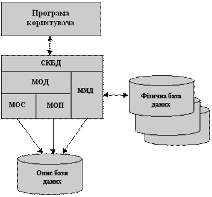

1. Поняття бази даних. 2
2. Призначення та класифікація систем управління базами даних (СУБД) 3
3. Проектування бази даних. 8
4. Визначення файла даних: запис, структура запису, поле запису та його реквізити (ім"я, тип, розмірність) 15
5. Типи даних. Поняття змінної та константи. 17
Відомі два підходи до організації інформаційних масивів: файлова організація та організація у вигляді бази даних. Файлова організація передбачає спеціалізацію та збереження інформації, орієнтованої, як правило, на одну прикладну задачу, та забезпечується прикладним програмістом. Така організація дозволяє досягнути високої швидкості обробки інформації, але характеризується рядом недоліків.
Характерна риса файлового підходу - вузька спеціалізація як обробних програм, так і файлів даних, що служить причиною великої надлишковості, тому що ті самі елементи даних зберігаються в різних системах. Оскільки керування здійснюється різними особами (групами осіб), відсутня можливість виявити порушення суперечливості збереженої інформації. Розроблені файли для спеціалізованих прикладних програм не можна використовувати для задоволення запитів користувачів, які перекривають дві і більше області. Крім того, файлова організація даних внаслідок відмінностей структури записів і форматів передання даних не забезпечує виконання багатьох інформаційних запитів навіть у тих випадках, коли всі необхідні елементи даних містяться в наявних файлах. Тому виникає необхідність відокремити дані від їхнього опису, визначити таку організацію збереження даних з обліком існуючих зв"язків між ними, яка б дозволила використовувати ці дані одночасно для багатьох застосувань. Вказані причини обумовили появу баз даних.
База даних може бути визначена як структурна сукупність даних, що підтримуються в активному стані та відображає властивості об"єктів зовнішнього (реального) світу. В базі даних містяться не тільки дані, але й описи даних, і тому інформація про форму зберігання вже не схована в сполученні "файл-програма", вона явним чином декларується в базі.
База даних може бути визначена як структурна сукупність даних, що підтримуються в активному стані та відображає властивості об"єктів зовнішнього (реального) світу. В базі даних містяться не тільки дані, але й описи даних, і тому інформація про форму зберігання вже не схована в сполученні "файл-програма", вона явним чином декларується в базі.
База даних орієнтована на інтегровані запити, а не на одну програму, як у випадку файлового підходу, і використовується для інформаційних потреб багатьох користувачів. В зв"язку з цим бази даних дозволяють в значній мірі скоротити надлишковість інформації. Перехід від структури БД до потрібної структури в програмі користувача відбувається автоматично за допомогою систем управління базами даних (СУБД).
СУБД - це складна програмна система накопичення та з наступним маніпулюванням даними, що представляють інтерес для користувача. Кожній прикладній програмі СУБД надає інтерфейс з базою даних та має засоби безпосереднього доступу до неї. Таким чином, СУБД відіграє центральну роль в функціонуванні автоматизованого банку даних.
Архітектурно СУБД складається з двох великих компонент (рис.2.1). За допомогою мови опису даних (МОД) створюються описи елементів, груп та записів даних, а також взаємозв"язки між ними, які, як правило, задаються у вигляді таблиць. В залежності від конкретної реалізації СУБД мову опису даних підрозділяють на мову опису схеми бази даних (МОС) та мову опису підсхем бази даних (МОП). Слід особливо зазначити, що МОД дозволяє створити не саму базу даних, а лише її опис.
Архітектура СУБД
Для виконання операцій з базою даних в прикладних програмах використовується мова маніпулювання даними (ММД). Фактична структура фізичного зберігання даних відома тільки СУБД.
З метою забезпечення зв"язків між програмами користувачів і СУБД (що особливо важливо при мультипрограмному режимі роботи операційної системи) в СУБД виділяють особливу складову - резидентний модуль системи керування базами даних. Цей модуль значно менший від всієї СУБД , тому на час функціонування автоматизованого банку інформації він може постійно знаходитись в основній пам"яті ЕОМ та забезпечувати взаємодію всіх складових СУБД і програм, які до неї звертаються.
Приведена структура притаманна усім СУБД, котрі розрізняються обмеженнями та можливостями по виконанню відповідних функцій. Отже, процес порівняння і оцінки таких систем для одного конкретного застосування зводиться до співставлення можливостей наявних СУБД з вимогами користувачів.
До недавнього часу при організації обробки інформації на ЕОМ застосовувався підхід, при якому на основі інформації одного і того ж об"єкту управління (наприклад, матеріальних ресурсів) в залежності від її вигляду (нормативна. розцінкова тощо) і ступеню постійності формувались масиви лінійної структури двох типів: умовно-постійні (з інформацією, яка використовувалась багато разів протягом довгого часу) і умовно-перемінні (з фактичною або поточною інформацією). Створення і багаторазове використання масивів з умовно-постійною інформацією має ті переваги, які дозволяють значно спростити первинну документацію шляхом виведення з її складу ряд постійних реквізитів. знизити трудомісткість робіт на стадії заповнення первинних документів, підготовки і вроду фактичної або поточної інформації до ЕОМ. Недоліком таких масивів, які мають лінійну структуру, є то що інформація одного і того я об"єкту управління розосереджується поміж багатьох різних масивів (нормативних, планових та ін.), що неминуче веде до дублювання деяких реквізитів, ускладненню при спільній їх обробці тощо, а головне - не дає змоги реалізувати принцип незалежності від прикладних програм користувача. Лінійні масиви, сформовані традиційним способом, ефективні, як правило, а позиції одного застосування.
3 розвитком інформаційного забезпечення систем автоматизованої обробки інформації, прагненням забезпечити виконання нових режимів обробки даних у реальному часі і з мультидоступом до схованих даних позначилась нова тенденція до складення інформаційного забезпечення розподілених баз даних. В умовах використання таких баз створюються комплексні масиви нелінійної структури, які мають усі дані про ту чи іншу предметну область або про керований об"єкт як постійного, так і перемінного характеру.
Взагалі база даних є сукупність даних на машинних носіях, які використовуються при функціонуванні системи обробки інформації, організовані по визначеним правилам, які передбачають загальні принципи описування збереження і маніпулювання ними, а також які незалежні від прикладних програм. В основі організації бази даних є модель даних, яка визначає правила, у відповідності з якими структуруються дані. За допомогою моделі представляється велика кількість даних і описуються взаємно зв’язки між ними. Найбільш поширені такі моделі даних: ієрархічна, сітьова, реляційна.